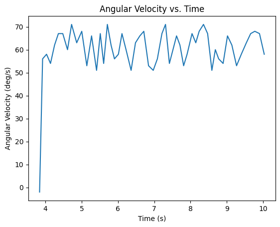

Lab 9 Mapping
The goal of this lab was to use the TOF sensors and angular speed control to map out a room.
Control
The robot's angular speed (collected using the IMU and low passed as done in lab 4) was used as feedback to the proportional controller in order to spin about its centre at a steady rate. I started by first spinning it using open loop control and determined the minimum PWM value necessary to get the robot to spin, this turned out to be 85. I also noted that the right side was spinning faster than the left side (not something that was prevalent during lab 5) causing it to veer off axis, so I made sure to have the left motor receiving a PWM value 1 higher. I also taped the wheels to reduce resistance.
Once this minimum threshold was determined, I used a proportional controller that I called from the computer to spin the robot at about 60 deg/s resulting in a data point every 5 degrees on average. This resolution is lower than the recommended resolution but this seemed to get the best results, anything slower simply was not moving or only 1 set of wheels would turn at a time, moving the robot off axis. I set the robot to spin for 14s resulting in about 2 rotations. I noticed that at the 3rd rotation the robot shifted too much.
On the Artemis side I collected timestamped, distance, angular velocity, and PWM and sent the data to the computer. To ensure that the PID controller worked well and the robot was spinning uniformly, I calculated the average of the angular velocity and made sure that it averaged about 60 deg/s.
Read out Distances
I placed the robot on each of the 4 marked points in the lab space (in the same orientation) and stored the data. I then plotted the distance vs time and noticed that the 2 rotations did not match up very well (this was expected as I did notice that the robot would veer off axis by the second turn) so I decided to split them in to 2 data sets and use the set that matched up with the other sets. This turned out to be the 1st rotation for all of them. I saw that the angular velocity remained quite constant about 60 deg/s so I decided that I could trust that the readings were spaced equally (about every 5 degrees).
I then plotted the points on polar coordinates and I could already see the shape of the room and obstacles come up. I had to shift the angles for each of them so the corners were oriented in the expected direction. I also had to slightly alter the scale for some of them since there was some variance on the angular speed, this was easy to do because I just had to ensure that all corners were right angles.
Merge and Plot Readings
The next step was to merge all these readings together to plot the room. I needed to convert the (r,θ) points to (x,y) points as well as convert them to the inertial reference frame of the room. I used the transformation matrix below to do this. I also then offset each x and y value based on the initial point the robot captured them from. I simplified the transformation matrix and used a python script to do this conversion.
I plotted all four data sets and the room took form.
Line-Based Map
I estimated where the walls were based on the concentration of points in the area, ignoring obvious noise.
Comparing my map to the actual room, I think I got a good resolution, it is definitely very skewed and the obstacles were not recognised as well as the walls, this is likely because the walls mostly only relied on data from one location while the obstacles relied on data from multiple so the slight issues in each data set got compounded to make the obstacles skewed.